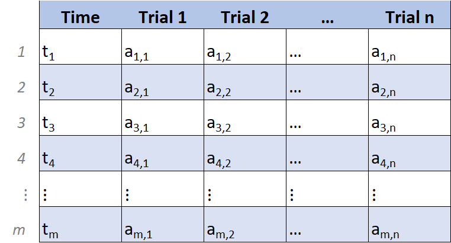

Chapter 2 Setting up fluoR
2.1 Installation
Currently, fluoR can only be installed from Github.
2.2 Convert to fluoR format
After exporting your recorded data from your preferred software (e.g. MATLAB, Doric software), the first step is to convert your data for quick use with the fluoR package. The format_data function is used for this.
There are two formats of data supported as input:
1. Vertical format
- timestamps in the first column
- one column for each trial’s recorded values
2. Horizontal format
- timestamps in the first row
- one row for each trial’s recorded values
2.3 Input/Output
Input
The input for format_data can be a matrix or data frame - labeled or unlabeled. The function detects whether the number of rows are greater than the number of columns (vertical) and vice versa (horizontal).
Output
If the input is horizontal, then the object is transposed to vertical format. The table is then converted to a data frame, with each column being labeled. This makes manually working with the data more convenient and R-friendly.
The below table is an informal matrix representation of what the returned data frame will look like.

2.4 Examples
2.4.1 Format data
Format the GCaMP dataset included with the fluoR package so the data is easier to work with.
## Time Trial1 Trial2 Trial3 Trial4 Trial5 Trial6 Trial7 Trial8 Trial9
## 1 -3.9902 82.689 82.858 81.709 89.747 90.788 90.365 123.53 120.39 119.95
## 2 -3.9803 82.656 82.922 81.702 89.637 90.847 90.418 123.30 120.41 119.82
## 3 -3.9705 82.650 82.984 81.713 89.545 90.927 90.485 123.13 120.45 119.73
## 4 -3.9607 82.671 83.042 81.726 89.476 91.003 90.578 123.02 120.52 119.66
## 5 -3.9508 82.712 83.085 81.732 89.428 91.056 90.696 122.96 120.59 119.62
## 6 -3.9410 82.757 83.116 81.714 89.397 91.080 90.833 122.95 120.66 119.60
## Trial10
## 1 116.94
## 2 116.97
## 3 117.00
## 4 117.01
## 5 117.00
## 6 116.97